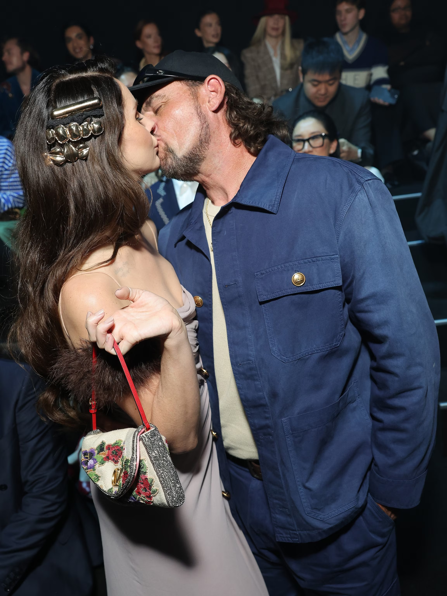

Lana Del Rey and Jeremy Dufrene: A Whirlwind Romance Turns Into Married Life

Pop singer Lana Del Rey and Louisiana airboat tour guide Jeremy Dufrene have turned heads with their unlikely pairing. Their journey together reads like a modern-fairytale: they first crossed paths in 2019 when Lana visited Dufrene’s swamp tour in Des Allemands, Louisiana.
Wikipedia
+2
LiveNOW
+2
After reconnecting, they obtained a marriage license on September 23, 2024 and married just days later on September 26 in an intimate bayou ceremony.